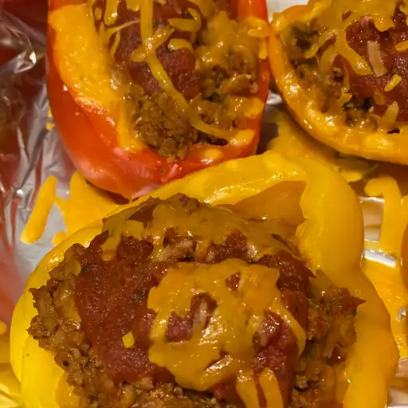

Peppers

Description
Delicious stuffed green peppers that are easy to make. Each green bell pepper contains ground beef, onion, tomatoes, rice, and cheese, and is cooked in tomato soup.
Ingredients
- 6 Peppers
- Seasonings
- Peeled Tomatoes
- 1 Medium White Onion
Directions
- Boil salt water
- Saute onion and beef
- Preheat Oven
- Fill peppers and finish it.